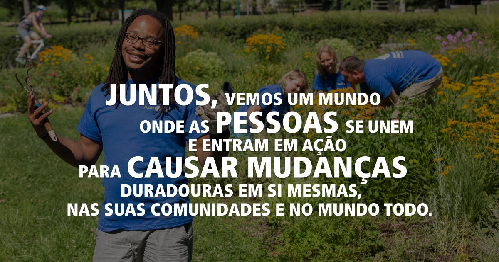

PRIORIDADE 1
IMPACTO
Como Pessoas de Ação, tomamos decisões baseadas em fatos.
Há mais de um século, fomos pioneiros em um novo modelo de liderança no servir baseado em conexões pessoais. Hoje, essas conexões são uma rede que transpõe barreiras culturais, linguísticas, geracionais e geográficas globalmente – e compartilha a visão de um mundo melhor. Como Pessoas em Ação, entendemos que a realização dessa visão requer um plano.
Como Pessoas de Ação, tomamos decisões baseadas em fatos.
Como Pessoas de Ação, primamos pela inclusão, engajamento e compaixão, com a ambição de conquistar um mundo melhor para todos.
Como Pessoas de Ação, criamos relacionamentos significativos que transcendem tempo e fronteiras
Como Pessoas de Ação, buscamos ideias e perspectivas que fortaleçam o Rotary e tragam mudanças.